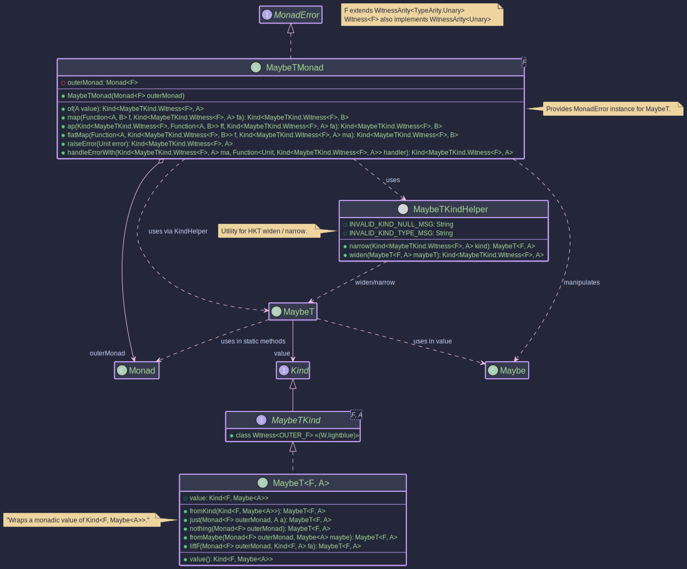

The MaybeT Transformer:
Combining Monadic Effects with Optionality
- How to combine Maybe's optionality with other monadic effects
- Building workflows where operations might produce Nothing within async contexts
- Understanding the difference between MaybeT and OptionalT
- Using
just,nothing, andfromMaybeto construct MaybeT values - Handling Nothing states with Unit as the error type in MonadError

MaybeT<F, A>: Combining Any Monad F with Maybe<A>
The MaybeT monad transformer allows you to combine the optionality of Maybe<A> (representing a value that might be
Just<A> or Nothing) with another outer monad F. It transforms a computation that results in Kind<F, Maybe<A>>
into a single monadic structure. This is useful for operations within an effectful context F (like
CompletableFutureKind for async operations or ListKind for non-deterministic computations) that can also result in
an absence of a value.
F: The witness type of the outer monad (e.g.,CompletableFutureKind.Witness,ListKind.Witness). This monad handles the primary effect (e.g., asynchronicity, non-determinism).A: The type of the value potentially held by the innerMaybe.
// From: org.higherkindedj.hkt.maybe_t.MaybeT
public record MaybeT<F, A>(@NonNull Kind<F, Maybe<A>> value) {
/* ... static factories ... */ }
MaybeT<F, A> wraps a value of type Kind<F, Maybe<A>>. It signifies a computation in the context of F that will
eventually produce a Maybe<A>. The main benefit comes from its associated type class instance, MaybeTMonad, which
provides monadic operations for this combined structure.
MaybeTKind<F, A>: The Witness Type
Similar to other HKTs in Higher-Kinded-J, MaybeT uses MaybeTKind<F, A> as its witness type for use in generic
functions.
- It extends
Kind<G, A>whereG(the witness for the combined monad) isMaybeTKind.Witness<F>. Fis fixed for a specificMaybeTcontext, whileAis the variable type parameter.
public interface MaybeTKind<F, A> extends Kind<MaybeTKind.Witness<F>, A> {
// Witness type G = MaybeTKind.Witness<F>
// Value type A = A (from Maybe<A>)
}
MaybeTKindHelper
- This utility class provides static
wrapandunwrapmethods for safe conversion between the concreteMaybeT<F, A>and itsKindrepresentation (Kind<MaybeTKind.Witness<F>, A>).
// To wrap:
// MaybeT<F, A> maybeT = ...;
Kind<MaybeTKind.Witness<F>, A> kind = MAYBE_T.widen(maybeT);
// To unwrap:
MaybeT<F, A> unwrappedMaybeT = MAYBE_T.narrow(kind);
MaybeTMonad<F>: Operating on MaybeT
The MaybeTMonad<F> class implements MonadError<MaybeTKind.Witness<F>, Unit>. The error type E for MonadError is fixed to Unit, signifying that an "error" in this context is the Maybe.nothing() state within the F<Maybe<A>> structure.
MaybeT represents failure (or absence) as Nothing, which doesn't carry an error value itself.
- It requires a
Monad<F>instance for the outer monadF, provided during construction. This instance is used to manage the effects ofF. - It uses
MaybeTKindHelper.wrapandMaybeTKindHelper.unwrapfor conversions. - Operations like
raiseError(Unit.INSTANCE)will create aMaybeTrepresentingF<Nothing>. TheUnit.INSTANCEsignifies theNothingstate without carrying a separate error value. handleErrorWithallows "recovering" from aNothingstate by providing an alternativeMaybeT. The handler function passed tohandleErrorWithwill receiveUnit.INSTANCEif aNothingstate is encountered.
// Example: F = CompletableFutureKind.Witness, Error type for MonadError is Unit
// 1. Get the Monad instance for the outer monad F
Monad<CompletableFutureKind.Witness> futureMonad = CompletableFutureMonad.INSTANCE;
// 2. Create the MaybeTMonad, providing the outer monad instance
MonadError<MaybeTKind.Witness<CompletableFutureKind.Witness>, Unit> maybeTMonad =
new MaybeTMonad<>(futureMonad);
// Now 'maybeTMonad' can be used to operate on Kind<MaybeTKind.Witness<CompletableFutureKind.Witness>, A> values.
maybeTMonad.of(value): Lifts a nullable valueAinto theMaybeTcontext. Result:F<Maybe.fromNullable(value)>.maybeTMonad.map(f, maybeTKind): Applies functionA -> Bto theJustvalue inside the nested structure. If it'sNothing, orfreturnsnull, it propagatesF<Nothing>.maybeTMonad.flatMap(f, maybeTKind): Sequences operations. TakesA -> Kind<MaybeTKind.Witness<F>, B>. If the input isF<Just(a)>, it appliesf(a)to get the nextMaybeT<F, B>and extracts itsKind<F, Maybe<B>>. IfF<Nothing>, it propagatesF<Nothing>.maybeTMonad.raiseError(Unit.INSTANCE): CreatesMaybeTrepresentingF<Nothing>.maybeTMonad.handleErrorWith(maybeTKind, handler): Handles aNothingstate. The handlerUnit -> Kind<MaybeTKind.Witness<F>, A>is invoked withnull.
MaybeT instances are typically created using its static factory methods, often requiring the outer Monad<F>
instance:
public void createExample() {
Monad<OptionalKind.Witness> optMonad = OptionalMonad.INSTANCE; // Outer Monad F=Optional
String presentValue = "Hello";
// 1. Lifting a non-null value: Optional<Just(value)>
MaybeT<OptionalKind.Witness, String> mtJust = MaybeT.just(optMonad, presentValue);
// Resulting wrapped value: Optional.of(Maybe.just("Hello"))
// 2. Creating a 'Nothing' state: Optional<Nothing>
MaybeT<OptionalKind.Witness, String> mtNothing = MaybeT.nothing(optMonad);
// Resulting wrapped value: Optional.of(Maybe.nothing())
// 3. Lifting a plain Maybe: Optional<Maybe(input)>
Maybe<Integer> plainMaybe = Maybe.just(123);
MaybeT<OptionalKind.Witness, Integer> mtFromMaybe = MaybeT.fromMaybe(optMonad, plainMaybe);
// Resulting wrapped value: Optional.of(Maybe.just(123))
Maybe<Integer> plainNothing = Maybe.nothing();
MaybeT<OptionalKind.Witness, Integer> mtFromMaybeNothing = MaybeT.fromMaybe(optMonad, plainNothing);
// Resulting wrapped value: Optional.of(Maybe.nothing())
// 4. Lifting an outer monad value F<A>: Optional<Maybe<A>> (using fromNullable)
Kind<OptionalKind.Witness, String> outerOptional = OPTIONAL.widen(Optional.of("World"));
MaybeT<OptionalKind.Witness, String> mtLiftF = MaybeT.liftF(optMonad, outerOptional);
// Resulting wrapped value: Optional.of(Maybe.just("World"))
Kind<OptionalKind.Witness, String> outerEmptyOptional = OPTIONAL.widen(Optional.empty());
MaybeT<OptionalKind.Witness, String> mtLiftFEmpty = MaybeT.liftF(optMonad, outerEmptyOptional);
// Resulting wrapped value: Optional.of(Maybe.nothing())
// 5. Wrapping an existing nested Kind: F<Maybe<A>>
Kind<OptionalKind.Witness, Maybe<String>> nestedKind =
OPTIONAL.widen(Optional.of(Maybe.just("Present")));
MaybeT<OptionalKind.Witness, String> mtFromKind = MaybeT.fromKind(nestedKind);
// Resulting wrapped value: Optional.of(Maybe.just("Present"))
// Accessing the wrapped value:
Kind<OptionalKind.Witness, Maybe<String>> wrappedValue = mtJust.value();
Optional<Maybe<String>> unwrappedOptional = OPTIONAL.narrow(wrappedValue);
// unwrappedOptional is Optional.of(Maybe.just("Hello"))
}
Let's consider fetching a userLogin and then their preferences, where each step is asynchronous and might not return a value.
public static class MaybeTAsyncExample {
// --- Setup ---
Monad<CompletableFutureKind.Witness> futureMonad = CompletableFutureMonad.INSTANCE;
MonadError<MaybeTKind.Witness<CompletableFutureKind.Witness>, Unit> maybeTMonad =
new MaybeTMonad<>(futureMonad);
// Simulates fetching a userLogin asynchronously
Kind<CompletableFutureKind.Witness, Maybe<User>> fetchUserAsync(String userId) {
System.out.println("Fetching userLogin: " + userId);
CompletableFuture<Maybe<User>> future = CompletableFuture.supplyAsync(() -> {
try {
TimeUnit.MILLISECONDS.sleep(50);
} catch (InterruptedException e) { /* ignore */ }
if ("user123".equals(userId)) {
return Maybe.just(new User(userId, "Alice"));
}
return Maybe.nothing();
});
return FUTURE.widen(future);
}
// Simulates fetching userLogin preferences asynchronously
Kind<CompletableFutureKind.Witness, Maybe<UserPreferences>> fetchPreferencesAsync(String userId) {
System.out.println("Fetching preferences for userLogin: " + userId);
CompletableFuture<Maybe<UserPreferences>> future = CompletableFuture.supplyAsync(() -> {
try {
TimeUnit.MILLISECONDS.sleep(30);
} catch (InterruptedException e) { /* ignore */ }
if ("user123".equals(userId)) {
return Maybe.just(new UserPreferences(userId, "dark-mode"));
}
return Maybe.nothing(); // No preferences for other users or if userLogin fetch failed
});
return FUTURE.widen(future);
}
// --- Service Stubs (returning Future<Maybe<T>>) ---
// Function to run the workflow for a given userId
Kind<CompletableFutureKind.Witness, Maybe<UserPreferences>> getUserPreferencesWorkflow(String userIdToFetch) {
// Step 1: Fetch User
// Directly use MaybeT.fromKind as fetchUserAsync already returns F<Maybe<User>>
Kind<MaybeTKind.Witness<CompletableFutureKind.Witness>, User> userMT =
MAYBE_T.widen(MaybeT.fromKind(fetchUserAsync(userIdToFetch)));
// Step 2: Fetch Preferences if User was found
Kind<MaybeTKind.Witness<CompletableFutureKind.Witness>, UserPreferences> preferencesMT =
maybeTMonad.flatMap(
userLogin -> { // This lambda is only called if userMT contains F<Just(userLogin)>
System.out.println("User found: " + userLogin.name() + ". Now fetching preferences.");
// fetchPreferencesAsync returns Kind<CompletableFutureKind.Witness, Maybe<UserPreferences>>
// which is F<Maybe<A>>, so we can wrap it directly.
return MAYBE_T.widen(MaybeT.fromKind(fetchPreferencesAsync(userLogin.id())));
},
userMT // Input to flatMap
);
// Try to recover if preferences are Nothing, but userLogin was found (conceptual)
Kind<MaybeTKind.Witness<CompletableFutureKind.Witness>, UserPreferences> preferencesWithDefaultMT =
maybeTMonad.handleErrorWith(preferencesMT, (Unit v) -> { // Handler for Nothing
System.out.println("Preferences not found, attempting to use default.");
// We need userId here. For simplicity, let's assume we could get it or just return nothing.
// This example shows returning nothing again if we can't provide a default.
// A real scenario might try to fetch default preferences or construct one.
return maybeTMonad.raiseError(Unit.INSTANCE); // Still Nothing, or could be MaybeT.just(defaultPrefs)
});
// Unwrap the final MaybeT to get the underlying Future<Maybe<UserPreferences>>
MaybeT<CompletableFutureKind.Witness, UserPreferences> finalMaybeT =
MAYBE_T.narrow(preferencesWithDefaultMT); // or preferencesMT if no recovery
return finalMaybeT.value();
}
public void asyncExample() {
System.out.println("--- Fetching preferences for known userLogin (user123) ---");
Kind<CompletableFutureKind.Witness, Maybe<UserPreferences>> resultKnownUserKind =
getUserPreferencesWorkflow("user123");
Maybe<UserPreferences> resultKnownUser = FUTURE.join(resultKnownUserKind);
System.out.println("Known User Result: " + resultKnownUser);
// Expected: Just(UserPreferences[userId=user123, theme=dark-mode])
System.out.println("\n--- Fetching preferences for unknown userLogin (user999) ---");
Kind<CompletableFutureKind.Witness, Maybe<UserPreferences>> resultUnknownUserKind =
getUserPreferencesWorkflow("user999");
Maybe<UserPreferences> resultUnknownUser = FUTURE.join(resultUnknownUserKind);
System.out.println("Unknown User Result: " + resultUnknownUser);
// Expected: Nothing
}
// --- Workflow Definition using MaybeT ---
// --- Domain Model ---
record User(String id, String name) {
}
record UserPreferences(String userId, String theme) {
}
}
This example illustrates:
- Setting up
MaybeTMonadwithCompletableFutureMonadandUnitas the error type. - Using
MaybeT.fromKindto lift an existingKind<F, Maybe<A>>into theMaybeTcontext. - Sequencing operations with
maybeTMonad.flatMap. IfWorkspaceUserAsyncresults inF<Nothing>, the lambda for fetching preferences is skipped. - The
handleErrorWithshows a way to potentially recover from aNothingstate usingUnitin the handler andraiseError(Unit.INSTANCE). - Finally,
.value()is used to extract the underlyingKind<CompletableFutureKind.Witness, Maybe<UserPreferences>>.
- The
MaybeTtransformer simplifies working with nested optional values within other monadic contexts by providing a unified monadic interface, abstracting away the manual checks and propagation ofNothingstates. - When
MaybeTMonadis used as aMonadError, the error type isUnit, indicating that the "error" (aNothingstate) doesn't carry a specific value beyond its occurrence.
MaybeT vs OptionalT: When to Use Which?
Both MaybeT and OptionalT serve similar purposes—combining optionality with other monadic effects. Here's when to choose each:
Use MaybeT when:
- You're working within the higher-kinded-j ecosystem and want consistency with the
Maybetype - You need a type that's explicitly designed for functional composition (more FP-native)
- You want to avoid Java's
Optionaland its quirks (e.g., serialisation warnings, identity-sensitive operations) - You're building a system where
Maybeis used throughout
Use OptionalT when:
- You're integrating with existing Java code that uses
java.util.Optional - You want to leverage familiar Java 8+ Optional APIs
- Your team is more comfortable with standard Java types
- You're wrapping external libraries that return
Optional
In practice: The choice often comes down to consistency with your existing codebase. Both offer equivalent functionality through their MonadError instances.
Further Reading
Start with the Java-focused resources to understand Maybe/Option patterns, then explore General FP concepts for deeper understanding, and finally check Related Libraries to see alternative approaches.
Java-Focused Resources
Beginner Level:
- 📚 Maybe vs Optional: Understanding the Difference - When to use custom Maybe over Java's Optional (10 min read)
- 📄 Null Handling Patterns in Modern Java - Comprehensive guide to null safety (15 min read)
Intermediate Level:
- 📄 MonadZero and Failure - Understanding failure representation (20 min read)
- 📄 Handling Nothing in Asynchronous Code - DZone's practical patterns (12 min read)
General FP Concepts
- 📖 Maybe/Option Type - Wikipedia's cross-language overview
- 📖 A Fistful of Monads (Haskell) - Accessible introduction to Maybe (30 min read)
Related Libraries & Comparisons
- 🔗 Vavr Option vs Java Optional - Feature comparison
- 🔗 Scala Option - Scala's battle-tested implementation
- 🔗 Arrow Option (Kotlin) - Kotlin FP approach
Community & Discussion
- 💬 Maybe vs Either for Error Handling - Stack Overflow comparison
- 💬 Why Use Maybe When We Have Optional? - Reddit discussion on use cases